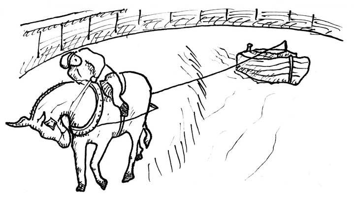

302 Low Bridge (Erie Canal)
+
transpose
-
+
font size
-
The call “Low bridge” is in reference to people riding on the rooftop of a barge. When passing under low hanging bridges they would have to duck or risk hitting their heads.
The song was written around the turn of the 20ᵗʰ century when mule powered barges were being replaced by steam powered ones.
I’ve [ Am ] got a [ C ] mule and her [ Dm ] name is [ E⁷ ] Sal;
[ Am ] Fifteen years on the [ E⁷ ] Erie [ Am ] Canal.
She’s a [ Am ] good old [ C ] worker and a [ Dm ] good old [ E⁷ ] pal;
[ Am ] Fifteen years on the [ E⁷ ] Erie [ Am ] Canal.
[ C ] We’ve haul’d some barges [ G ] in our day
[ Am ] Filled with lumber, coal, and [ E⁷ ] hay,
And [ Am ] every [ C ] inch of the [ Dm ] way we [ E⁷ ] know
From [ Am ] Albany to [ C ] Buffalo [ G⁷ ] .
[ C ] Low bridge, everybody [ G ] down,
[ C ] Low bridge, for we’re [ (F) ] coming [ G ] to a [ C ] town,
And you’ll [ C ] always know your [ G⁷ ] neighbor,
You’ll [ C ] always know your [ G⁷ ] pal
If you [ C ] ever navi[ F ] gated on the [ G⁷ ] Erie Ca[ C ] nal.
Get [ Am ] up there [ C ] Sal, we’ve [ Dm ] passed that [ E⁷ ] lock,
[ Am ] Fifteen years on the [ E⁷ ] Erie [ Am ] Canal.
And we’ll [ Am ] make [ C ] Rome before [ Dm ] six o’[ E⁷ ] clock
[ Am ] Fifteen years on the [ E⁷ ] Erie [ Am ] Canal.
Just [ C ] one more trip and [ G ] back we’ll go
[ Am ] Through the rain and sleet and [ E⁷ ] snow
And [ Am ] every [ C ] inch of the [ Dm ] way we [ E⁷ ] know
From [ Am ] Albany to [ C ] Buffalo [ G⁷ ] .
[ C ] Low bridge, everybody [ G ] down,
[ C ] Low bridge, for we’re [ (F) ] coming [ G ] to a [ C ] town,
And you’ll [ C ] always know your [ G⁷ ] neighbor,
You’ll [ C ] always know your [ G⁷ ] pal
If you [ C ] ever navi[ F ] gated on the [ G⁷ ] Erie Ca[ C ] nal.